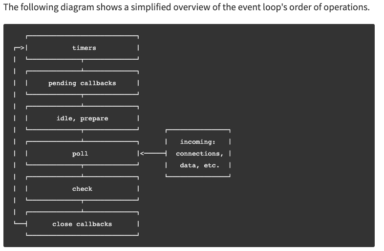

Node.js
Terms
What is Node.js
Runtime environment
REPL
Shebang
V8 engine
C++ API’s
Additional terms about how the V8 engine runs
Event-driven architecture
Emitters
Error-first callback function
The event loop in Node.js
Event loop phases
Poll phase
Importing and exporting modules
Modules in Node.js vs. ES6
module.exports
Two ways of exporting functions:
require()
import vs. require()
package.json
Define a function in a module and call the function after import
Npm
npm install
npm install -D
Node.js core modules
Important Node Modules
console
process
process.env
process.memoryUsage()
process.argv
process.exit(1)
process.emitWarning()
os
os.type()
os.arch()
os.networkInterfaces()
os.homedir()
os.hostname()
os.uptime()
os.freemem()
util
util.types
util.promisify()
util.format()
fs
readFile()
createReadStream()
createWriteStream()
events
eventEmitter.on()
eventEmitter.emit()
buffer
from()
alloc()
toString()
concat()
error
readline
timers
setImmediate()
http
createServer()
server.listen()
request()
get()
url
hostname
pathname
searchParams
querystring
parse()
stringify() and encode()
escape()
unescape()
express
Creating a web server
Routing requests based on http method
Routing requests based on path
Example request from a web server to a local file
Example request from a web server to another api over http
Additional node syntax
global
.editor
stdin.on()
Frameworks
Opinionated vs. opinionated frameworks
Express
References
Terms
What is Node.js
- A JavaScript runtime environment to execute JavaScript outside of a web browser
- It’s not a framework, it’s an environment in which frameworks like express (for HTTP servers) and
- Allows for full stack applications using just JavaScript
- Designed with server-side development in mind
- Designed by Google
- Note: browser specific values like window.alert() cannot be used
- Run a file in it using $ node filename.js
Runtime environment
- Where your program is executed - compiles human readable code into computer-level
- 2 main JS runtime environments:
- Your browser
- The Node runtime environment
REPL
- The read–eval–print loop, which is what you get by typing node in command line
- Evaluates input line by line
Shebang
- A line in your Javascript that tells the OS which interpreter to use for running the script. I.e.
#!/usr/bin/env node
// Your code
- Note: your file should have executable permission in order to use a shebang. Use the below command in the directory of your app.js file: chmod u+x app.js
V8 engine
- Open source Javascript engine for runtime. Developed by Google for Chrome. It’s used in Node.js
- Has a heap and a call stack
C++ API’s
- The equivalent of Web API’s in the browser - separate threads that allow for concurrency
Additional terms about how the V8 engine runs
Event-driven architecture
- A term used to describe Node.js - matches Javascript’s support of situations where you don’t know when they’ll occur which is typical on websites (i.e. not knowing when/if a user will click)
- This is opposite to traditional programming in which execution is done in a pre-defined order
- Node.js has event driven architecture and much of node is build around certain objects (emitters) emitting events which cause listeners to be called
Emitters
- Any object in Node.js that emits an event
- Example: fs.ReadSteram is an emitter because it emits an event every time the file is opened
Error-first callback function
- Callback functions that expect an error as the first argument and data as the second argument. If no errors is thrown, the first argument is undefined
- Is used in many asynchronous Node api’s
- They’re used because try...catch (which is the the typical way to do error handling) can’t catch errors that are thrown asynchronously. Using an error first callback for the error handling will catch it
- See an example of one below
The event loop in Node.js
- Process that sends asynchronous operations to the system kernel (which is multithreaded) to allow for non blocking asynchronous operations such as I/O
- Note: it’s initialized before processing the input script (or REPL - if that’s being used). This allows async calls or timers from the script to be processed by the event loop
Event loop phases
- The iteration steps within an event loop
- Each block in the below diagram. See documentation for explanations

Poll phase
- Phase that blocks/polls for I/O and then processes events in a poll queue
- If there are events in the poll queue, the event loop will iterate through the callbacks synchronously
Importing and exporting modules
Modules in Node.js vs. ES6
- Node (module.exports and require()) uses different syntax then ES6 (import/export)
module.exports
- Define and export a specific Node.js module
- Every JavaScript file in Node has a local module object with an exports property that defines what should be exported from the file
- Note: Node.js doesn’t support export default. Use module.exports instead
let Airplane = {}; // Create object representing the module Menu
Airplane.myAirplane = "StarJet";// A property of the Menu module; adds data to the Menu object
module.exports = Airplane; // Exports the Airplane object as a module. Note module is a variable that represents the module
Two ways of exporting functions:
function celsiusToFahrenheit(celsius) {
return celsius * (9/5) + 32;
}
module.exports.celsiusToFahrenheit = celsiusToFahrenheit;
module.exports.fahrenheitToCelsius = function(fahrenheit) {
return (fahrenheit - 32) * (5/9);
};
require()
- Import a Nodejs module. The below gives you all exports in the module
const Airplane = require('./1-airplane.js')
function displayAirplane() {
console.log(Airplane.myAirplane);
};
displayAirplane();
- You can also use object destructuring to get selected values:
const { celsiusToFahrenheit } = require('./converters.js');
import vs. require()
- With import, we can import pieces of the module or the entire module. With require(), you have to import the entire module
package.json
- File that contains information about the current node project - like a manifest. This includes
- Metadata (project title, authors)
- Node packages that are required for the project
- Key value pairs for command line scripts to perform certain processes
- When npm and yarn store names/versions for all packages
- It’s at the same level as the src directory
- To create:
- Go to the folder where you want to make the package
- npm init
- Answer the questions prompted
Define a function in a module and call the function after import
// File titled airplane.js; we are wrapping data and functions inside the object
module.exports = {
myAirplane: "CloudJet",
displayAirplane: function() {
return this.myAirplane;
}
};
// In another file in same directory as airplane.js
const Airplane = require('./airplane.js');
console.log(Airplane.displayAirplane())
Npm
- Package manager for Javascript
- It’s also the default package manager for Node.js
npm install
- Creates a folder called node_modules and copies all package files to it
- Installs all dependencies for a project
npm install -D
- Install a project
- The -D instructs npm to add each package to a property called devDependencies in package.json.
- In doing this, other developers can just run npm install and npm will look inside package.json and install everything needed
Node.js core modules
- Built-in modules for common tasks
- They ship with Node.js and must be imported using require()
- You can see them all by typing require('module').builtinModules in the REPL terminal
Important Node Modules
console
- Allows using the console to send feedback to a program and get feedback from it
- In addition to log(), methods include:
- .assert() to print a message to terminal if a value is false
- i.e. console.assert(myArray.length > 5);
- .count() maintains how many types a certain string has been called
- .table() to print out a tabular view of an object/array
process
- Contains methods/info about the current program being run
- Note: doesn’t need to be required
- Helpful methods:
- See info about directory we’re running, i.e. have if/else logic based on the working directory
- Convention: add a property to process.env that has the key NODE_ENV=production/development:
process.env.NODE_ENV = "development";
if (process.env.NODE_ENV === 'development') {
console.log('Testing! Testing! Does everything work?');
}
- Give info about cpu usage of current process - returns the number of bytes of memory
let initialMemory = process.memoryUsage().heapUsed;
// Do something
let finalMemory = process.memoryUsage().heapUsed;
- An array that holds arguments provided in the command line when running node
- This is a way to easily take in terminal input from node
- For example:
$ node my-module.js 100
console.log(process.argv) # Returns ['node', 'my-module.js', '100']
- Signals the operating system to exit the code
- By default, the exit code is 0 for success
- Provide a custom warning message and detail
import { emitWarning } from 'process';
// Emit a warning with a code and additional detail.
emitWarning('Something happened!', {
code: 'MY_WARNING',
detail: 'Hello world! This is the error message'
});
// Emits:
// (node:11803) [MY_WARNING] Warning: Something happened!
// Hello world! This is the error message
os
- Gives information about the computer, operating system, and network that’s running it
- Note that Javascript couldn’t do this before Node!
os.hostname()
os.uptime()
os.freemem()
- Returns amount of free system memory in bytes
util
- Utility function methods
- Helpful methods:
- Runtime type checking, i.e.
console.log(util.types.isStringObject("Hello world!")); // Returns false
console.log(util.types.isStringObject(new String("Hello world!"))); // Returns true
- Turn a callback function into a promise. This is helpful if converting old callback code to use the more-modern promise. Example for a database query:
// The old way of doing things
function getUser(id, callback) {
return setTimeout(() => {
if (id === 5) {
callback(null, { nickname: "Teddy" }) // Error first callback. Null is sent for error parameter
} else {
callback(new Error("User not found"))
}
}, 1000)
}
function callback(error, user) {
if (error) {
console.error(error.message)
process.exit(1)
}
console.log(`User found! Their nickname is: ${user.nickname}`);
}
getUser(5); // Returns "User found! Their nickname is: Teddy"
Invoke using .then() and .catch()
// Change to use promises. The function callback() is no longer needed
const getUserPromise = util.promisify(getUser);
getUserPromise(5)
.then((user) => {
console.log(`User found! Their nickname is: ${user.nickname}`);
})
.catch((error) => {
console.log('User not found', error);
});
Invoke using async...await
const getUserPromise = util.promisify(getUser);
const invoke = async(id) => {
try {
const user = await getUserPromise(id);
console.log(`User found! Their nickname is ${user.nickname}`)
} catch (error) {
console.log(`User not found`, error);
}
}
invoke(5);
import { format } from 'util';
console.log(format('%s:%s', 'foo'));
// Returns: 'foo:%s'
console.log(format('%s:%s', 'foo', 'bar', 'baz'));
// Returns: 'foo:bar baz'
fs
- The file system module: it allows you to work with the file system on your computer. On the back-end, less restricted filesystem access is essential
- This is not part of any browser runtime because you don’t want to give browsers (and therefore sites) access to your files
- Each method on the fs module has a synchronous version and an asynchronous version
- Important methods:
- Reads data from a specified file. Example using an error-first callback:
const fs = require('fs');
let readDataCallback = (err, data) => {
if (err) {
console.log(`Something went wrong: ${err}`);
} else {
console.log(`Provided file contained: ${data}`);
}
};
fs.readFile('./file.txt', 'utf-8', readDataCallback);
- Read a file line by line. See use with readline
- Ends when there is no more data to read
- Create a writable stream to a file. It will remain open indefinitely until ending it
const fs = require('fs')
const fileStream = fs.createWriteStream('output.txt');
fileStream.write('This is the first line!');
fileStream.write('This is the second line!');
fileStream.end();
events
- Core module that contains an EventEmitter class to handle objects that emit events
- When an EventEmitter object emits an event, all functions a
- Useful EventEmitter methods:
- Lets one or more callback functions be attached to specific events (which can be named) emitted by the object
- This is a way of registering listeners
- First argument is the name of the event as a string. Second argument is the listener callback function
- All of these functions attached to the event are called synchronously
const EventEmitter = require('events');
class MyEmitter extends EventEmitter {}
const myEmitter = new MyEmitter();
myEmitter.on('event', () => {
console.log('an event occurred!');
});
console.log("hello world!");
myEmitter.emit('event');
// Returns:
// hello world!
// an event occurred!
const EventEmitter = require('events');
const myEmitter = new EventEmitter();
let newUserListener = (data) => {
console.log(`We have a new user: ${data}.`);
};
// Assign the newUserListener function as the listener callback for 'new user' events
myEmitter.on('new user', newUserListener)
// Emit a 'new user' event
myEmitter.emit('new user', 'Lily Pad') //newUserListener will be invoked with 'Lily Pad'
// Returns "We have a new user: Lily Pad."
- Note: event names are usually camelCase
buffer
- Representation of fixed-length sequences of bytes. It’s like an array of integers with each element in the array equal to a byte of data
- You can specify different formats + encodings
- It’s available in the global scope but is recommended to import it
- Useful methods:
- Convert a value to a buffer
const { Buffer } = require('buffer');
console.log(Buffer.from("hello world", "utf8"));
// Prints: <Buffer 68 65 6c 6c 6f 20 77 6f 72 6c 64>
- Creates a new buffer object as big as the size of the input
const buffer1 = Buffer.alloc(5);
console.log(buffer1); // Ouput: <Buffer 00 00 00 00 00>
const buffer2 = Buffer.alloc(5, "z");
console.log(buffer2); // Output: <Buffer 7a 7a 7a 7a 7a>
- Converts buffer object into a human readable string. You can also say optional arguments on what byte you want to start and end translation
console.log(Buffer.from("hello world", "utf8").toString());
// Prints "hello world"
console.log(Buffer.from("hello world", "utf8").toString("hex"));
// Prints: 68656c6c6f20776f726c64
- Concatenates buffer objects
const buf1 = Buffer.from("hello world", 'utf16le');
const buf2 = Buffer.from("hello world", 'utf16le');
console.log(buf1); // <Buffer 68 00 65 00 6c 00 6c 00 6f 00 20 00 77 00 6f 00 72 00 6c 00 64 00>
console.log(Buffer.concat([buf1, buf2]))
// Returns <Buffer 68 00 65 00 6c 00 6c 00 6f 00 20 00 77 00 6f 00 72 00 6c 00 64 00 68 00 65 00 6c 00 6c 00 6f 00 20 00 77 00 6f 00 72 00 6c 00 64 00>
error
- Contains all the standard JS errors (SyntaxERror, ReferenceError, TypeError, etc.) along with the Javascript Error class to create new error instances
- This allows for throwing new errors and the use of try...catch
- It’s within the global scope. Does not need to be imported
- Often used for the error in an error first callback, i.e.
errorProneAsyncApi = (input, callback) => {
console.log(`Running errorProneAsyncApi with input: ${input}...\n`)
setTimeout(() => {
let myErr;
if (input === 'problematic input') {
myErr = new Error('whoops')
callback(myErr)
} else {
let responseData = `Received valid input "${input}"`
callback(myErr, responseData)
}
}, 0)
}
// An error-first callback
let errorFirstCallback = (err, data) => {
if (err) {
console.log(`Something went wrong. ${err}\n`);
} else {
console.log(`Something went right. Data: ${data}\n`);
}
};
errorProneAsyncApi("problematic input", errorFirstCallback);
readline
- A way to read input line by line as a stream
- The createInterface() method creates an EventEmitter to emit “line” events
- You can couple it with the createReadStream() method of fs to read files line by line:
const readline = require('readline');
const fs = require('fs');
const myInterface = readline.createInterface({
input: fs.createReadStream('file.txt')
});
myInterface.on('line', (fileLine) => {
console.log(`The line read: ${fileLine}`);
}); // Note: you can also make a separate writeFile(fileLine) function and then call myInterface.on('line', writeFile)
// For a 3 line .txt file, this returns:
// The line read: This is a test file!
// The line read: Line 2!
// The line read: Line 3!
timers
- Execute code at a specific point in time
- It’s a global module. No need to require() it
- Note: timer functions are scheduled and put into a queue which is processed during every loop iteration. Therefore if a timer function is executed outside a module, it will have random behavior
- Important methods:
- Like setTimeout(). It takes in a callback function and optional arguments for that callback function. It executes these callback function(s) immediately after the current poll phase is completed
- If multiple setImmediate functions are made, they’ll be queued for execution in the order of creation
console.log("hello world!");
setImmediate(() => {
console.log('Hello! My name is Slim Shady.')
});
setImmediate(() => {
console.log('Hello! My name is Snoop Dogg.')
});
console.log("hello world 2!");
// Returns:
// hello world!
// hello world 2!
// Hello! My name is Slim Shady.
// Hello! My name is Snoop Dogg.
http
- A core module used for networking
- Important methods
- Creates an HTTP server
- Takes in a single callback function as argument. The function has two arguments: a request (req) and a response (res)
- req and res are objects. Each have their own sets of methods related to requests/responses
- Note: server is the object created by createServer()
- Takes in a port number as the first argument and an optional callback function as the second - this function can be used to do something after the server has started
const http = require("http");
const server = http.createServer((req, res) => {
res.end('Server is running!'); // You can dump raw html into this and render webpages
});
server.listen(8080, () => {
const { address, port } = server.address();
console.log(`Server is listening on: http://${address}:${port}`);
})
// Type http://127.0.0.1:8080/ into browser. "Server is running!" will be returned
- Method to make an http request to an external service
- Takes in two arguments: a configuration object and a callback for response handling
- Make GET requests. It’s like request() but more convenient because automatically sets to GET and calls req.end() when finished
- Takes in two arguments: a url and a response handler
const http = require('http');
const url = 'http://example.com/users/25/projects?type=personal&month=january';
// Make a GET request with the URL and process the response.
http.get(url, (res) => {
let data = '';
res.on('data', (chunk) => {
data += chunk;
});
res.on('end', () => {
console.log(data);
});
});
// Prints raw html of the webpage
url
- Core module that allows parsing the different parts of your url easily.
- Main class is the URL class. Its properties include:
hostname
pathname
searchParams
const url = new URL('https://www.example.com/p/a/t/h?query=string');
console.log(typeof(url));
console.log(url);
// Returns:
// object
// URL {
// href: 'https://www.example.com/p/a/t/h?query=string',
// origin: 'https://www.example.com',
// protocol: 'https:',
// username: '',
// password: '',
// host: 'www.example.com',
// hostname: 'www.example.com',
// port: '',
// pathname: '/p/a/t/h',
// search: '?query=string',
// searchParams: URLSearchParams { 'query' => 'string' },
// hash: ''
// }
- It can be used to both construct and deconstruct a URL into parts
const host = url.hostname; // example.com
const pathname = url.pathname; // /p/a/t/h
const searchParams = url.searchParams; // {query: 'string'}
const createdUrl = new URL('https://www.example.com');
createdUrl.pathname = '/p/a/t/h';
createdUrl.search = '?query=string';
createdUrl.toString(); // Creates https://www.example.com/p/a/t/h?query=string
querystring
- A module just for parsing and formatting URL query strings. Very helpful for writing API’s
- Note: in new Node versions (v16 and up) this module’s functionality has been absorbed into the url module through URLSearchParams
- Important methods:
- Parse a query string into key value pairs
querystring = require("querystring");
const str = "key1=value1&key2=value2";
const queryString = querystring.parse(str);
console.log(queryString); // Returns { prop1: value1, prop2: value2}
console.log(queryString.key1); // Returns value1
- They both do the same thing: create a query from all pairs in an object
querystring = require("querystring");
const queries = {
manufacturer: "boeing",
type: "widebody"
};
const query = querystring.stringify(queries);
console.log(query); // Returns manufacturer=boeing&type=widebody
- Does percent-encoding for characters including ':', '/', '?', '#', '[', ']', '@', '!', '$', '&', "'", '(', ')', '*', '+', ',', ';', '='
- Decodes percent-encoded characters in a query string
express
- A framework (not just a module) for putting up a modern + functional web server. It’s built on top of the http module and has more functionality
- Install it with npm. Unlike http it does not come with Node
- See https://quinncoyle.com/notes/express
Creating a web server
Routing requests based on http method
- With the http module, you can route based on the method property
const http = require("http");
let counter = 0;
const server = http.createServer((req, res) => {
const { method } = req; // Destructure method property from req
switch (method) {
case "GET":
console.log(method);
res.end(`This page has been accessed ${counter} times`);
counter++;
case "POST":
// Do something
case "DELETE":
// Do something
case "PUT":
// Do something
default:
console.log("Error");
}
})
server.listen(8080, () => {
const { address, port } = server.address();
console.log(`Server is listening on: http://${address}:${port}`);
})
Routing requests based on path
- You can pull out req.url from http.createServer to filter on the path:
const http = require('http');
// Handle get request
const handleGetRequest = (req, res) => {
const pathname = req.url;
if (pathname === '/users') {
res.end(JSON.stringify([]));
}
}
// Creates server instance
const server = http.createServer((req, res) => {
const { method } = req;
switch (method) {
case 'GET':
return handleGetRequest(req, res);
default:
throw new Error(`Unsupported request method: ${method}`);
}
});
// Starts server listening on specified port
server.listen(4001, () => {
const { address, port } = server.address();
console.log(`Server is listening on: http://${address}:${port}`);
});
// Entering http://127.0.0.1:4001/users into browser returns "[]"
Example request from a web server to a local file
- Example database file database.json in working directory
const http = require('http');
const fs = require('fs');
// GET request handler
const handleGetRequest = (req, res) => {
if (req.url === '/users') {
// Loads the database and searches for data
makeDatabaseRequest('users', (err, payload) => {
if (err) {
res.writeHeader(400);
res.write("Error retrieving data");
} else {
// Process successful request
res.writeHeader(200, { "Content-Type": "application/json" });
res.write(JSON.stringify(payload));
console.log(payload);
}
res.end();
});
} else {
res.end("Go to http://127.0.0.1:4001/users")
}
}
// Creates server instance
const server = http.createServer((req, res) => {
const { method } = req;
switch (method) {
case 'GET':
return handleGetRequest(req, res);
default:
throw new Error(`Unsupported request method: ${method}`);
}
});
// Starts server listening on specified port
server.listen(4001, () => {
const { address, port } = server.address();
console.log(`Server is listening on: http://${address}:${port}`);
});
function makeDatabaseRequest(type, cb) {
fs.readFile('./database.json', 'utf8', function(err, payload) {
if (err) {
cb(err, null);
} else {
cb(null, JSON.parse(payload)[type]);
}
});
}
Additional node syntax
global
- The parent object of every node-specific global property
- If it’s a global module, require() is not needed to import it (i.e. console)
- Note that some variables like module.exports and require() exist in the scope of modules, not globally
.editor
- Use this command in the REPL to write multiple lines of Javascript
stdin.on()
- A method that can be used to get input from the user through the terminal
- It’s an instance of EventEmitter with a data event whenever a user enters text into the terminal
- Note that we have to convert the input to a string first because the user input is an instance of the Buffer class
- Example: echo what user types into terminal:
process.stdin.on('data', (userInput) => {
let input = userInput.toString()
console.log(input)
});
Frameworks
Opinionated vs. opinionated frameworks
- Opinionated: has an opinion about the “right way” to do something
- Allows for rapid development if you’re using the framework for the right thing. If you aren’t, they offer fewer choices
- Examples: Angular, Django, IaaS services (i.e. Azure, AWS)
- Unopinionated: Fewer restrictions on the components to use or how to put them together
- You are allowed to use the tools you want to complete the task, but the downside is that you have to find the components for those tools yourself
- Examples: Express, React, Flask, PaaS services (i.e. Heroku)
Express
- The most popular Node web framework, it’s a back-end web application framework to build web applications and API’s. It’s the standard server framework for Node.js
- Allows for faster and efficient web development - can be used for apps, middleware, REST API’s, and accessing files in a browser
- Can integrate with any database mechanism that’s supported by Node, i.e. MySQL or MongoDB
- See more in https://quinncoyle.com/notes/express
References